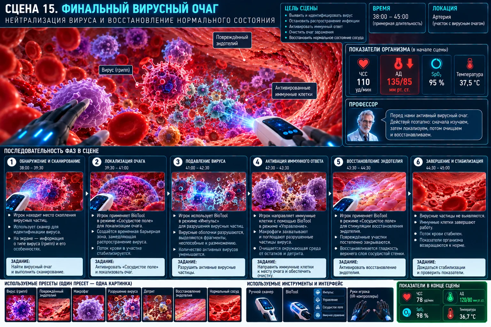

Финальный вирусный очаг
Объединить вирусологию и иммунологию в многофазный финальный эпизод.

Сценарная последовательность
Фазы финального босса
Фаза 1 — Сдержать распространение
Инфицированная клетка генерирует новые вирусные частицы. Игрок возвращается к rhythm-action и удерживает вирусную нагрузку ниже критического уровня.
Фаза 2 — Найти антиген
Сканер выделяет вирусный шип и эпитоп. Игрок получает терминологию «антиген» и «эпитоп».
Фаза 3 — Антитела
Игрок выбирает антитело, комплементарное эпитопу. Возникает нейтрализованный вирусный комплекс.
Фаза 4 — Фагоциты
BioTool направляет макрофаги/нейтрофилы к нейтрализованным вирусным частицам. Вирусная нагрузка снижается.
Фаза 5 — Инфицированная клетка
Сканер выявляет источник. Цитотоксический T-лимфоцит направляется к заражённой клетке и запускает контролируемую гибель без взрыва.
Фаза 6 — Финальная очистка
Новые вирусы перестают появляться. Остаточные частицы связываются антителами и удаляются фагоцитами до 0 %.
Технические требования сцены
- Босс не является гигантским вирусом: это композитный очаг.
- Каждая из 6 фаз использует уже изученную механику и добавляет один новый смысл.
- После устранения инфицированной клетки отключается генератор новых вирусов.